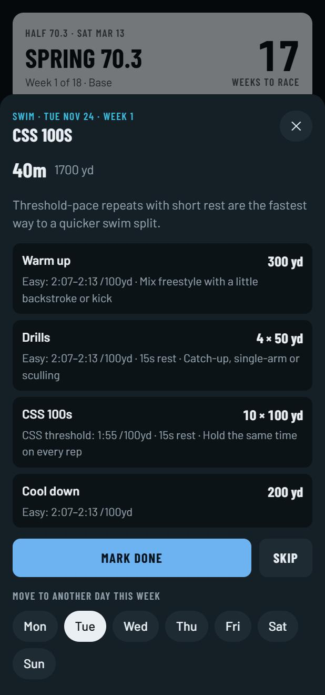
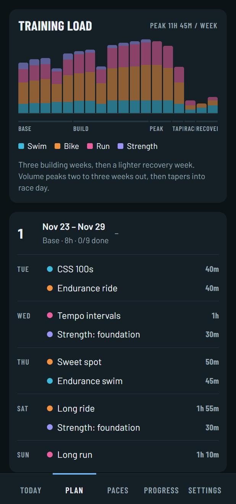
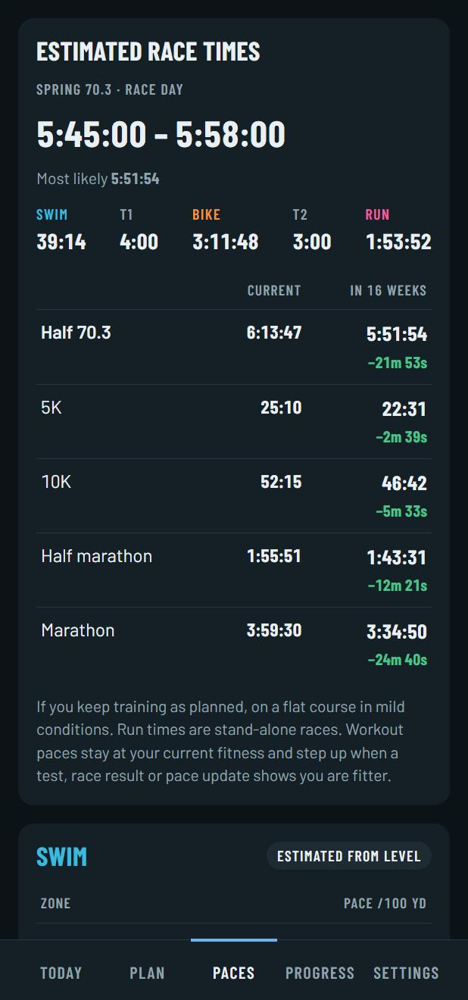

Built for multisport
Triathlon, duathlon, aquabike, aquathlon, or a single sport, from sprint to full distance.
A plan that fits your week
Tell Tripace Pro your race, the days you can train and your current times. It builds base, build, peak and taper phases, with a recovery week every few weeks.
A target for every session
Swim paces per 100, bike power and heart-rate zones, and run paces, all set from your own fitness. They step up when a test or race shows you are fitter.
Live coaching
Record outdoor runs and rides with GPS, with voice cues for each step and half-mile splits. Tripace Pro also connects to Bluetooth heart-rate monitors and smart trainers.
Race-day forecast
See your likely finish time and splits for each leg, now and on race day if you keep training as planned.
Strava sync
Send finished workouts to Strava. Workouts recorded on your watch come back from Strava and tick off the matching session in your plan.
Your data stays yours
No ads, no tracking, no selling. Your plan and workouts live on your phone. Privacy policy
Inside the app



Train with your Garmin watch
Swimmers can't look at a phone mid-set, so Tripace Pro puts the workout on your wrist. Today you can send any planned session to a Garmin watch over a USB cable, as a structured workout with steps, rest and targets.
We are building a direct link with Garmin Connect so this happens without the cable:
- Connect once. You sign in on Garmin's own page and choose what to share. Tripace Pro never sees your Garmin password.
- Your plan appears on your watch. Upcoming swim, bike and run sessions are sent to your Garmin Connect calendar and sync to the watch.
- Train with the watch. Follow each step with its pace, power or heart-rate target.
- Your plan updates itself. The finished activity comes back to Tripace Pro, marks the session done and keeps your forecast current.
You can disconnect at any time in Tripace Pro or in Garmin Connect. See the privacy policy for exactly what is shared.